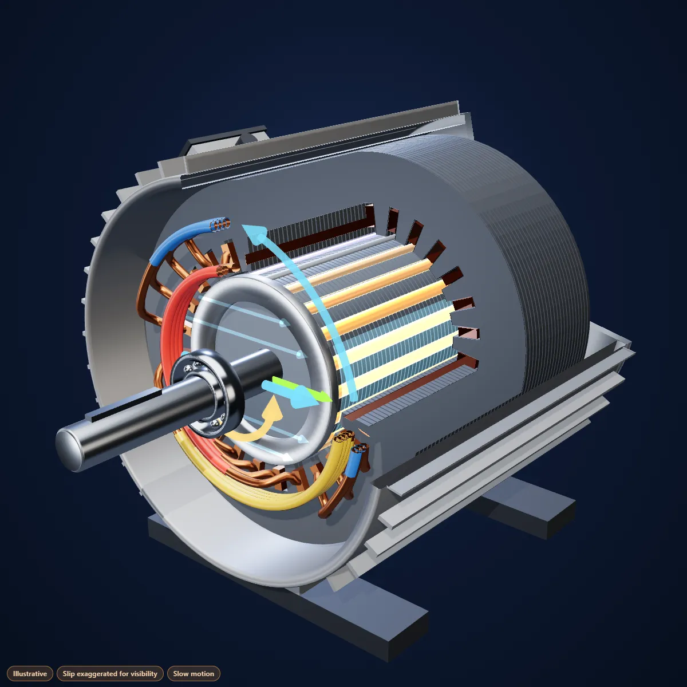

Step 1 · Explore it
Cause and effect, in 3D
Watch the mechanism step by step, then test your thinking with “What if?” predictions.
What if you swap two of the three supply wires? Predict first, then watch.
The future learning experience
Understand how things really work in interactive 3D, practise with an AI tutor that asks before it tells, and master exam technique. Physics, Maths, Chemistry and Biology. Built by a teacher.

Seven steps in three phases. AI helps where research shows it works; everything else is teacher-written and marked exactly. Try the steps below.
✦ AI tutor marks the steps where AI helps
Understand the mechanism, not just the picture
Step 1 · Explore it
Watch the mechanism step by step, then test your thinking with “What if?” predictions.
What if you swap two of the three supply wires? Predict first, then watch.
Step 2 · Explain it to me ✦ AI tutor
Example conversation
Step 3 · Build the chain
Tap the links in order, cause to effect.
Think it through, then prove it with your hands
Step 4 · Spot the trap ✦ AI coaches the fix
True or false?
Step 5 · Do it, then say it
Rotor speed
Write answers that earn the marks, and remember them
Step 6 · Write it ✦ AI Exam Coach
2 of 3 marking points
Hint: if the rotor turned at exactly the field's speed, would the field still cut the bars?
Example feedback. The live coach marks against the teacher's own mark scheme and gives hints, never the full answer.
Step 7 · Revisit it
Why does an induction motor always have slip? One sentence.
Short recall, spaced out over time, so understanding lasts until the exam.
Research shows that how AI is designed decides whether it helps or harms learning. Our AI tutor follows the principles behind the successful studies: it asks before it tells, works in small steps, and is grounded in a teacher's own solutions and mark schemes.
In a 2025 randomised trial at Harvard, a purpose-built AI physics tutor produced more than double the learning gains of an active-learning class, in less time.1
In a field study of nearly a thousand high school maths students, unrestricted chatbot use left students doing worse once the AI was removed. A version giving hints, not answers, largely avoided this.2
These studies are about AI tutoring in general, not our product. We will share results from our own pilots as they become available.
Flagship GCSE topics, each with the complete seven-step experience.
The motor effect and Fleming's left-hand rule, finally in 3D.
In developmentFind the hidden right-angled triangle inside any 3D shape.
In developmentWatch the double bond open as bromine adds across it.
In developmentFollow the blood through valves, chambers and both circuits.
In developmentLive now, going further: Inside an induction motor (A-level Physics) Lines in 3D (Further Maths)
Meet us at Bett UK 2027, ExCeL London, 20–22 January.
Bring 3D explainers, AI-supported practice and exam coaching into lessons and revision.
Licence our learning loops or commission custom 3D learning content.
We're building a new learning system across science and maths. Ask us about our roadmap.
Teacher-led, AI-assisted. Every explainer is designed and checked by a qualified subject specialist, and every AI response is grounded in a teacher's own solutions and mark schemes.
Get in touch